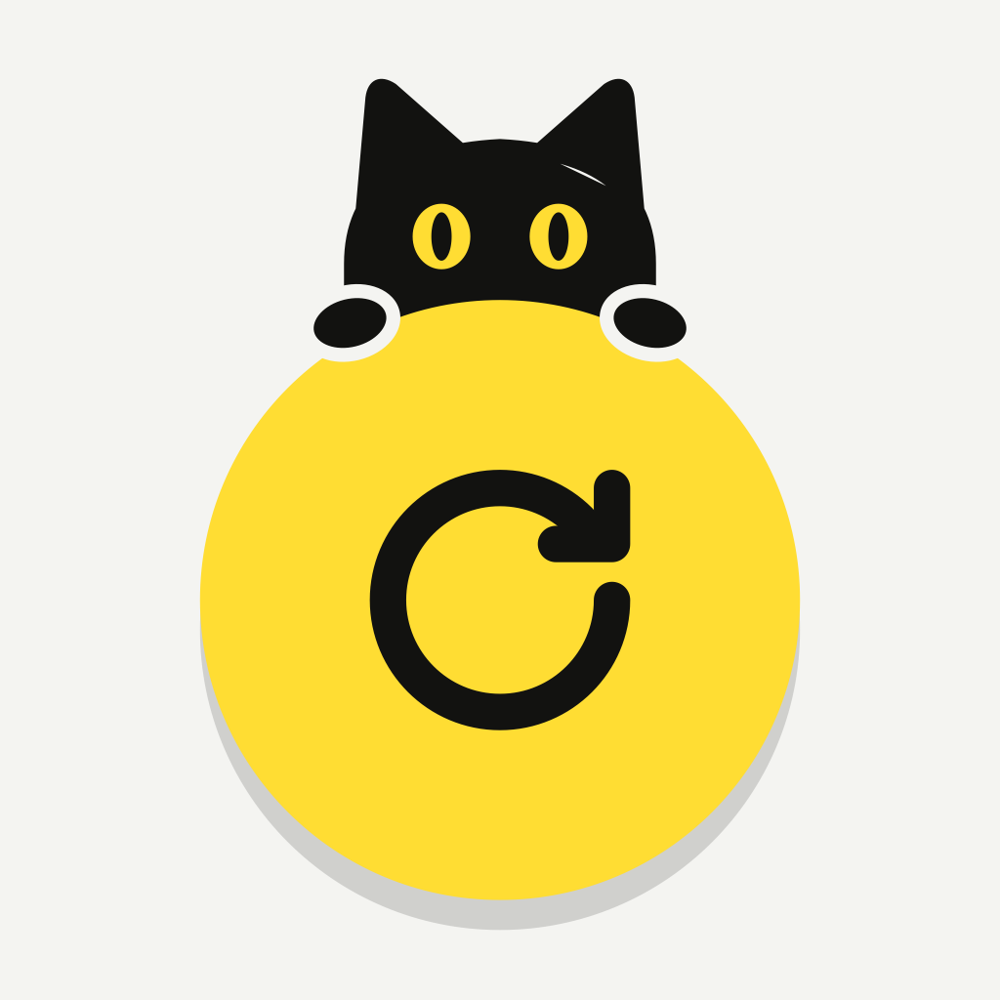

<!doctype html>
<html lang="en">
<head>
<meta charset="utf-8">
<title>Snuffle App Store screenshots</title>
<!--
  Six 1320 × 2868 posters per language (the 6.9" iPhone size App Store Connect scales down for the others).
  Open the file for a contact sheet of every language; `?lang=en&shot=2` shows one poster at full size, which is
  what render.sh photographs. Text lives in copy.js, simulator screenshots in screens/<lang>/ (capture.sh).
  Languages with a `font` in copy.js load it from Google Fonts; the rest use the system's SF Pro.
-->
<style>
  :root {
    --accent: #FFDD33; --ink: #121210; --paper: #F4F4F1; --card: #FFFFFF; --cat: #121210;
    --number: "SF Pro";            /* compressed heavy, the app's own figures */
    --native: "Noto Sans SC";      /* set per language from copy.js */
    --leading: 1.14;
  }
  * { box-sizing: border-box; margin: 0; }
  body { background: #262623; font-family: "SF Pro", sans-serif; -webkit-font-smoothing: antialiased; }
  body.sheet { background: #262623; padding: 40px; }
  .lang { color: #B9B9B0; font: 600 28px "SF Pro", sans-serif; margin: 30px 0 14px; }
  .strip { display: flex; gap: 40px; zoom: 0.25; }

  .shot { width: 1320px; height: 2868px; position: relative; overflow: hidden; flex: none; }
  .shot.accent { background: var(--accent); color: var(--ink); }
  .shot.paper { background: var(--paper); color: var(--ink); }
  .shot.ink { background: var(--ink); color: var(--paper); --cat: #5A5A52; }

  /* Headline: two lines, shrunk together until the longer one fits. */
  .head { position: absolute; left: 96px; right: 96px; top: 150px; }
  [dir="rtl"] .phone, [dir="rtl"] .brand, [dir="rtl"] .sticker { direction: ltr; }
  .title { font-size: 190px; white-space: nowrap; }
  .title span { display: block; }
  [data-script="latin"] .title { font-family: "SF Pro"; font-variation-settings: "wdth" 46, "wght" 860; line-height: 1.02; }
  [data-script="latin"][data-tall] .title { line-height: var(--leading); }
  [data-script="native"] .title { font-family: var(--native); font-weight: 900; line-height: var(--leading); letter-spacing: -0.02em; }
  .ink .title { color: var(--accent); }
  .sub { margin-top: 38px; font-size: 54px; line-height: 1.3; font-weight: 600; opacity: 0.72; text-wrap: balance; }
  [data-script="native"] .sub, [data-script="native"] .source b, [data-script="native"] .facts .note { font-family: var(--native); font-weight: 700; }

  .figure { font-family: var(--number); font-variation-settings: "wdth" 30, "wght" 860; line-height: 1; }

  /* The phone: a simulator screenshot inside a plain bezel, with the Dynamic Island drawn on top. */
  .phone { position: absolute; left: 50%; width: var(--w); margin-left: calc(var(--w) / -2); padding: calc(var(--w) * 0.021);
    background: #0B0B0A; border-radius: calc(var(--w) * 0.158); box-shadow: inset 0 0 0 4px #3D3D38, 0 50px 110px rgba(0, 0, 0, 0.26); }
  .screen { position: relative; overflow: hidden; aspect-ratio: 1320 / 2868; border-radius: calc(var(--w) * 0.137); background: var(--paper); }
  .screen img { display: block; width: 100%; height: 100%; }
  .island { position: absolute; left: 35.6%; top: 1.46%; width: 28.8%; height: 3.8%; border-radius: 999px; background: #000; }

  /* The cat, as CatView.swift draws it (120 × 84 grid). */
  .cat { position: absolute; display: block; overflow: visible; }
  .paws { position: absolute; display: flex; justify-content: center; }
  .paw { background: var(--cat); position: relative; }
  .paw::before, .paw::after { content: ""; position: absolute; top: 8%; width: 6%; height: 42%; border-radius: 99px; background: rgba(244, 244, 241, 0.5); }
  .paw::before { left: 33%; } .paw::after { right: 33%; }

  .button { position: absolute; border-radius: 50%; background: var(--accent); display: grid; place-items: center;
    box-shadow: 0 24px 50px rgba(18, 18, 16, 0.3); }

  /* 1 · connect: four sources wired into the phone */
  .sources { position: absolute; left: 96px; right: 96px; top: 790px; display: grid; grid-template-columns: repeat(4, 1fr); }
  .source { display: flex; flex-direction: column; align-items: center; }
  .tile { width: 232px; height: 232px; border-radius: 58px; background: var(--card); border: 7px solid var(--ink); display: grid; place-items: center; }
  .tile img { width: 150px; height: 150px; object-fit: contain; }
  .source b { margin-top: 20px; height: 112px; padding: 0 6px; display: flex; align-items: center; text-align: center;
    font-size: 42px; line-height: 1.15; font-weight: 700; }
  .source i { margin-top: 10px; width: 7px; height: 160px; background: var(--ink); border-radius: 4px; }
  .board { position: absolute; left: 96px; right: 96px; }
  .row { border-top: 8px solid currentColor; display: flex; justify-content: space-between; align-items: baseline; gap: 30px; }
  .board .row:last-child { border-bottom: 8px solid currentColor; }
  .panel { position: absolute; left: 0; right: 0; bottom: 0; border-radius: 108px 108px 0 0; }
  .brand { position: absolute; left: 96px; display: flex; align-items: center; gap: 30px; font: 800 84px "SF Pro"; }
  .brand img { width: 150px; height: 150px; border-radius: 34px; }

  /* 3–5 · a sticker on the phone's shoulder; none of them needs translating */
  .sticker { position: absolute; right: 70px; top: 700px; padding: 16px 46px 12px; border-radius: 999px; border: 7px solid var(--ink);
    background: var(--accent); color: var(--ink); font-size: 124px; transform: rotate(7deg); box-shadow: 0 18px 40px rgba(18, 18, 16, 0.22); }
  .sticker.dark { background: var(--ink); color: var(--accent); font-size: 70px; padding: 30px 40px 28px; letter-spacing: 0.04em; }

  /* 6 · privacy */
  .facts .word { font-size: 264px; white-space: nowrap; padding-top: 30px; }
  .facts .word span { display: inline-block; }
  [data-script="latin"] .facts .word { font-family: "SF Pro"; font-variation-settings: "wdth" 30, "wght" 860; line-height: 1; }
  [data-script="native"] .facts .word { font-family: var(--native); font-weight: 900; line-height: var(--leading); letter-spacing: -0.02em; }
  .facts .row { display: block; padding-bottom: 46px; }
  [data-tall] .facts .row { padding-bottom: 26px; }
  [data-tall] .facts .word { padding-top: 14px; }
  .facts .note { font-size: 56px; font-weight: 600; opacity: 0.72; margin-top: 10px; }
</style>
</head>
<body>
<script src="copy.js"></script>
<script>
const query = new URLSearchParams(location.search);
const esc = (text) => text.replace(/&/g, "&amp;").replace(/</g, "&lt;");

function head(copy, max) {
  return `<div class="head"><div class="title" data-max="${max || ""}">${copy.title.map((line) => `<span>${esc(line)}</span>`).join("")}</div>
    <p class="sub">${esc(copy.sub)}</p></div>`;
}

function phone(lang, screen, width, top) {
  return `<div class="phone" style="--w:${width}px; top:${top}px"><div class="screen">
    <div class="island"></div></div></div>`;
}

// The head only; `happy` closes the eyes into arcs, as after a refresh that found something.
function catHead(width, happy) {
  const eyes = happy
    ? `<path d="M37.5 48Q45 39 52.5 48M67.5 48Q75 39 82.5 48" fill="none" stroke="var(--accent)" stroke-width="4" stroke-linecap="round"/>`
    : [45, 75].map((x) => `<ellipse cx="${x}" cy="45" rx="7.4" ry="8.4" fill="var(--accent)"/><ellipse cx="${x}" cy="45" rx="2.6" ry="6.2" fill="#121210"/>`).join("");
  return `<svg class="cat" viewBox="0 0 120 90" width="${width}" height="${width * 0.75}">
    <g fill="var(--cat)" stroke="var(--cat)" stroke-width="4" stroke-linejoin="round">
      <path d="M25 38L27.5 9.5Q28.1 4.9 32.1 7.5L52 25Z"/><path d="M95 38L92.5 9.5Q91.9 4.9 87.9 7.5L68 25Z"/>
      <path d="M22 88V52Q22 24 60 22Q98 24 98 52V88Z"/>
    </g>${eyes}
    <path d="M55.5 55H64.5L60 60.5Z" fill="var(--accent)" stroke="var(--accent)" stroke-width="1.6" stroke-linejoin="round"/></svg>`;
}

// Head and paws for a "button" of `size` whose top edge is at `top`, centred on `center` (CatView's proportions).
function peekingCat(size, center, top, happy, outline) {
  const width = size * 0.78, paw = size * 0.15;
  const pawStyle = `width:${paw}px; height:${paw * 0.67}px; border-radius:${paw / 2}px ${paw / 2}px ${paw * 0.42}px ${paw * 0.42}px; box-shadow:0 0 0 ${size * 0.043}px ${outline}`;
  return {
    head: catHead(width, happy).replace('class="cat"', `class="cat" style="left:${center - width / 2}px; top:${top - size * 0.3976}px"`),
    paws: `<div class="paws" style="left:${center - size / 2}px; width:${size}px; top:${top}px; gap:${size * 0.32}px">
      <div class="paw" style="${pawStyle}; transform:rotate(-14deg); transform-origin:bottom"></div>
      <div class="paw" style="${pawStyle}; transform:rotate(14deg); transform-origin:bottom"></div></div>`,
  };
}

// A panel rising from the bottom with the cat looking over its top right corner, as on the app's welcome screen.
function catPanel(top, fill, inner) {
  const cat = peekingCat(576, 1020, top, false, fill);
  return `${cat.head}<div class="panel" style="top:${top}px; background:${fill}">${inner}</div>
    ${cat.paws.replace(`top:${top}px`, `top:${top - 24}px`)}`;
}

const brand = (top) => `<div class="brand" style="top:${top}px">Snuffle</div>`;

const shots = [
  (c, lang) => `<section class="shot accent">${head(c.connect)}
    <div class="sources">${["posthog.svg", "revenuecat.svg", "appstore.png", "googleplay.png"].map((logo, index) =>
      `<div class="source"><div class="tile"></div><b>${esc(c.connect.sources[index])}</b><i></i></div>`).join("")}</div>
    ${phone(lang, "home-rest", 920, 1196)}</section>`,

  (c, lang) => `<section class="shot paper">${head(c.revenue)}${phone(lang, "money", 1000, 790)}<div class="sticker figure">+$40</div></section>`,

  (c, lang) => {
    const size = 372, center = 660, middle = 2618;
    const cat = peekingCat(size, center, middle - size / 2, true, "var(--paper)");
    return `<section class="shot ink" style="--cat:#121210">${head(c.refresh)}${phone(lang, "home", 900, 806)}
      ${cat.head}<div class="button" style="width:${size}px; height:${size}px; left:${center - size / 2}px; top:${middle - size / 2}px">
        <svg viewBox="0 0 24 24" width="${size * 0.43}" height="${size * 0.43}" fill="none" stroke="#121210" stroke-width="1.5" stroke-linecap="round" stroke-linejoin="round"><path d="M20 12A8 8 0 1 1 17.66 6.34M20 4V8H16"/></svg>
      </div>${cat.paws}</section>`;
  },

  (c, lang) => `<section class="shot accent">${head(c.reviews)}${phone(lang, "reviews", 1000, 790)}<div class="sticker dark">★★★★★</div></section>`,
  (c, lang) => `<section class="shot ink">${head(c.widgets)}${phone(lang, "widget", 1000, 790)}<div class="sticker figure" style="border-color:var(--accent)">PRO</div></section>`,

  (c) => `<section class="shot paper">${head(c.privacy)}
    <div class="board facts" style="top:800px">${c.privacy.rows.map(([word, note]) =>
      `<div class="row"><div class="word" data-max="264"><span>${esc(word)}</span></div><div class="note">${esc(note)}</div></div>`).join("")}</div>
    ${catPanel(2520, "var(--accent)", brand(96))}</section>`,
];

function render(lang, only) {
  const copy = COPY[lang];
  const html = shots.map((shot, index) => (only && only !== index + 1 ? "" : shot(copy, lang))).join("");
  const attributes = `data-script="${copy.font ? "native" : "latin"}"${copy.lineHeight ? " data-tall" : ""}${copy.rtl ? ' dir="rtl"' : ""}`;
  const style = `--native:'${copy.font || "Noto Sans SC"}'; --leading:${copy.lineHeight || 1.14}`;
  return `<div class="strip" ${attributes} style="${style}">${html}</div>`;
}

const only = Number(query.get("shot")) || 0;
if (only) {
  document.body.innerHTML = render(query.get("lang") || "zh-Hans", only);
  document.querySelector(".strip").style.zoom = 1;
} else {
  document.body.className = "sheet";
  const langs = query.get("lang") ? [query.get("lang")] : Object.keys(COPY);
  document.body.innerHTML = langs.map((lang) => `<p class="lang">${lang}</p>${render(lang)}`).join("");
}

// Load each shown language's font, then shrink every headline and fact until its longest line fits the column.
const families = [...new Set((query.get("lang") ? [query.get("lang")] : Object.keys(COPY)).map((lang) => COPY[lang].font).filter(Boolean))];
const loaded = families.map((family) => new Promise((resolve) => {
  const link = document.createElement("link");
  link.rel = "stylesheet";
  link.href = `https://fonts.googleapis.com/css2?family=${family.replace(/ /g, "+")}:wght@700;900&display=block`;
  link.onload = link.onerror = () => Promise.all([document.fonts.load(`900 100px "${family}"`), document.fonts.load(`700 50px "${family}"`)]).then(resolve, resolve);
  document.head.append(link);
}));
Promise.all(loaded).then(() => document.fonts.ready).then(() => {
  for (const title of document.querySelectorAll(".title, .facts .word")) {
    let size = Number(title.dataset.max) || 190;
    const fits = () => Math.max(...[...title.children].map((line) => { line.style.display = "inline-block"; const width = line.offsetWidth; line.style.display = ""; return width; })) <= title.clientWidth;
    title.style.fontSize = size + "px";
    while (!fits() && size > 60) { size -= 2; title.style.fontSize = size + "px"; }
  }
  // A headline or subtitle that runs long pushes the picture down rather than under it; stickers keep clear of the text.
  for (const shot of document.querySelectorAll(".shot")) {
    const head = shot.querySelector(".head");
    const bottom = head.offsetTop + head.offsetHeight;
    const below = [...shot.querySelectorAll(".phone, .sources, .board")];
    const delta = Math.max(0, bottom + 44 - Math.min(...below.map((element) => element.offsetTop)));
    for (const element of below) element.style.top = element.offsetTop + delta + "px";
    for (const sticker of shot.querySelectorAll(".sticker")) sticker.style.top = Math.max(sticker.offsetTop + delta, bottom + 14) + "px";
  }
  document.documentElement.dataset.ready = "1";
});
</script>
</body>
</html>
